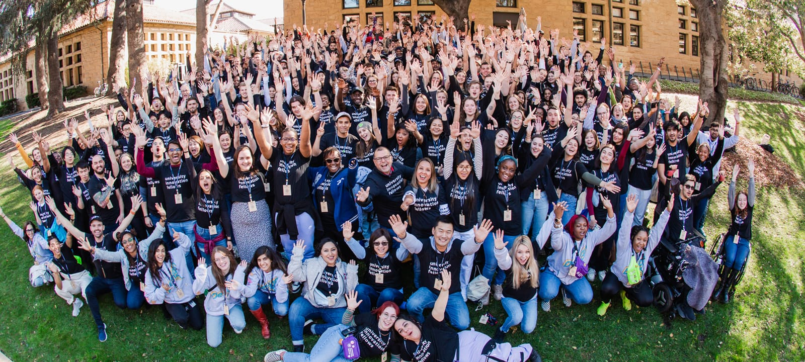

- TYPE
- Strategy
- TEAM CREDIT
- Caroline Berger, Max Kemats
- DATE
- 2023 – 2026
Building a Strategic Plan for the NEXT Innovation Scholars
OVERVIEW
The NEXT Innovation Scholars Program (NIS) started with a cohort of just 10 students back in 2021. Now, the program is on track to have 100 students. This growth is a significant mark of the program's success, but it also presents a challenge: how does NIS preserve its culture and continue to deliver excellence in the face of such change? As their project for Stanford's University Innovation Fellows Program, students Caroline Berger, Max Kemats, and Yale Miller developed and implemented a new strategic plan for NIS. The plan's name? The NEXT New Deal.
Who are the NEXT Innovation Scholars?
Want to know all about the NEXT Innovation Scholars? Check out the two annual reports I designed above for a detailed account of all that we do.
NIS is the University of Cincinnati's premier design thinking and innovation scholarship program. Each year the program accepts a cohort of 10 to 15 new students from any college or major. Multidisciplinary teams are at the core of everything NIS does.
Students participate in at least one project each semester. Many are with outside commercial partners such as P&G, KAO Brands, King Records, and more. Others are insights projects or strategic foresight reports that exist solely within the university ecosystem.
And who are the University Innovation Fellows?
Lots of innovation and acronyms, but I assure you these are two different programs! While the NEXT Innovation Scholars is a program within the University of Cincinnati, the University Innovation Fellows is a global fellowship created and run by Stanford's d.school.
I was accepted into the 2024 cohort alongside fellow UC students Max Kemats and Caroline Berger. Each UIF team completes a year-long project, then travels to the Netherlands to share their work at a conference.
